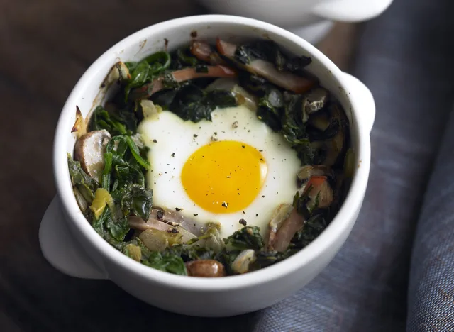

Baked Eggs with Mushrooms and Spinach

A simple and Tasty Breakfast Bowl!
It doesn't get much simpler than this recipe. If you have a spare ramekin around, you can easily make an easy egg and spinach breakfast bowl before heading out the door to start your day. You can even add a little bit of toast to the side to dip your into your eggs.
Ingredients List
- 1 Tbsp olive oil
- 1 small onion, chopped
- 2 cups mushrooms, sliced
- 4 slices Canadian bacon, cut into thin strips
- 1/2 frozen spinach, thawed
- 1/2 can roasted green chiles
- Salt and peper to taste
- 4 eggs
Step-By-Step Guide
- Preheat the oven to 375 degrees F
- Heat the oil in a large skillet set over medium heat.
- Add the onion and cook for about 5 minutes, until clear
- Add the mushrooms and cook for about 5 minutes, until lightly browned.
- Stir in the bacon, spinach, and chiles, and cook for a few minutes, until the spinach is heated through.
- If any water from the spinach accumulates in the pan, carefully drain.
- Season with salt and pepper.
- Divide the mixture among 4 to 6-ounce oven-safe ramekins that have bee lightly greased and butter
- Carefully crack an egg into each, making sure to keep the yolks intact.
- Place the ramekins in a baking dish and bake until the whites are just set but the yolks are still runny, about 10 minutes.
Back to Top
Back to Main Menu